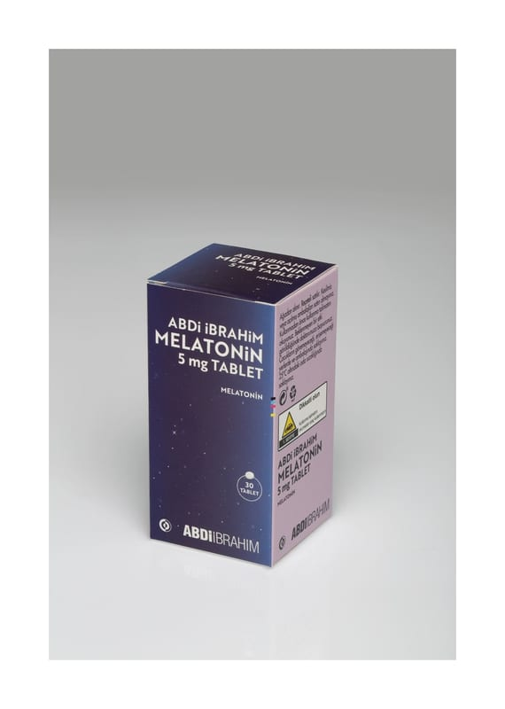

Abdi İbrahim Melatonin 5 MG TABLET

Ne için kullanılır
KT · Bölüm 1ABDİ İBRAHİM MELATONİN’in etkin maddesi olan melatonin, vücut tarafından üretilen bir grup doğal hormonlardan biridir. Bu hormon vücudun gece ve gündüz ritmini düzenlemeye yardımcı olur.
ABDİ İBRAHİM MELATONİN 5 mg Tablet, beyazdan hafif sarıya, yuvarlak bikonveks, her iki yüzü çentiksiz tablettir. ABDİ İBRAHİM MELATONİN, 30 tablet içeren HDPE şişe, silika jel ve çocuk emniyetli PP kapak içerisinde piyasaya sunulmaktadır. Yetişkinlerde saat farkı değişikliklerine bağlı gelişen uyku bozukluğunun (jet-lag) kısa süreli tedavisinde kullanılır.
Bu ilacı kullanmaya başlamadan önce bu KULLANMA TALİMATINI dikkatlice okuyunuz, çünkü sizin için önemli bilgiler içermektedir. • Bu kullanma talimatını saklayınız. Daha sonra tekrar okumaya ihtiyaç duyabilirsiniz. • Eğer ilave sorularınız olursa, lütfen doktorunuza veya eczacınıza danışınız. • Bu ilaç kişisel olarak sizin için reçete edilmiştir, başkalarına vermeyiniz. • Bu ilacın kullanımı sırasında, doktora veya hastaneye gittiğinizde doktorunuza bu ilacı kullandığınızı söyleyiniz. • Bu talimatta yazılanlara aynen uyunuz. İlaç hakkında size önerilen dozun dışında yüksek veya düşük doz kullanmayınız.